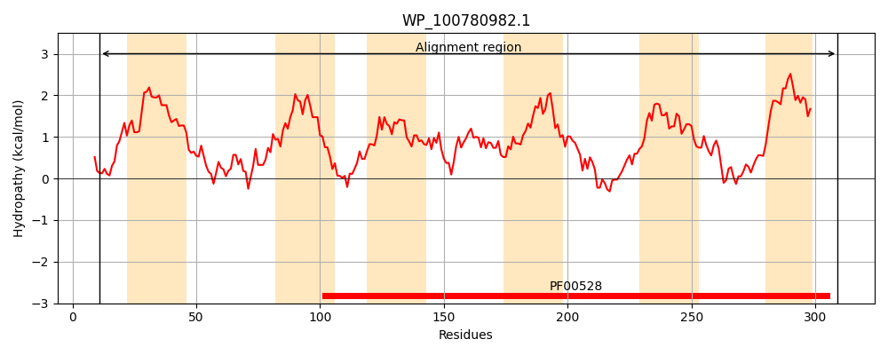
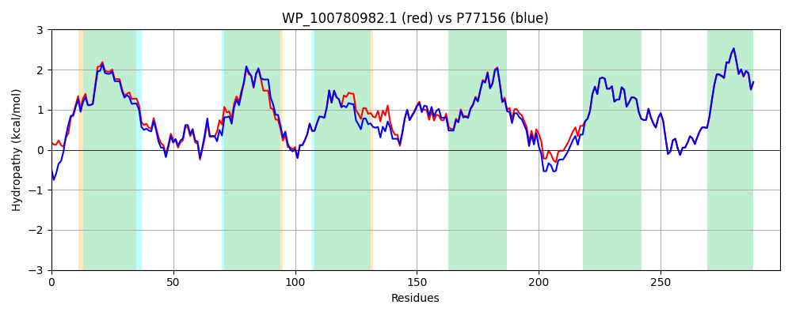

Hit Accession: P77156
Hit TCID: 3.A.1.11.9
Hit Description: gnl|BL_ORD_ID|11483 gnl|TC-DB|P77156|3.A.1.11.9 Inner membrane ABC transporter permease protein YdcU OS=Escherichia coli (strain K12) GN=ydcU PE=1 SV=1
Mach Len: 299
e:0.000000
Query TMS Count : 6
Hit TMS Count: 6
TMS-Overlap Score: 7.050000
Predicted Substrates:CHEBI:9218;spermidine, CHEBI:8650;putrescine, CHEBI:4705;double-stranded DNA
BLAST Alignment:
Score: 1394 , Bit scores: 541 bits, E-value: 0.0e+00, Alignment length: 299, Percentage identity: 89
Query: 11 GRVSGIFWRRPALGLFLLLLGPLMWFGIVYLGSLLTLLWQSIYTFDDFTMSVTSDFTLANLRALFNPANYDIIVRTLVMALSVTLASAMLALPMAWYMARYTSGKMKAFFYIAVMLPMWASYIVKAYAWVLLLAKDGVAQWFLSHLGLEGALNALLTVPAIGGNTLSTSGLGRFLVFVYIWLPFMILPVQAALERIPGSLLQASADLGAGPRQTFRYVVLPLAIPGIAAGSIFTFSLTLGDFIVPQLVGPPGYFIGNMVYSQQGAIGNMPMAAAFTLVPIVLIALYLAFVKRLGAFDAL 309
G+VSG FW P LGLFLLLLGPLMWFGIVY GSLLTLLWQ YTFDDFTMSVT + TLAN+RALFNPANYDII+RTL MA++VT+ASA+LA PMAWYMARYTSGKMKAFFYIAVMLPMWASYIVKAYAW LLLAKDGVAQWFL HLGLE L A LT+PA+GGNTLSTSGLGRFLVF+YIWLPFMILPVQAALER+P SLLQASADLGA PRQTFRYVVLPLAIPGIAAGSIFTFSLTLGDFIVPQLVGPPGYFIGNMVYSQQGAIGNMPMAAAFTLVPI+LIALYLAFVKRLGAFDAL
Sbjct: 15 GKVSGFFWHNPGLGLFLLLLGPLMWFGIVYFGSLLTLLWQGFYTFDDFTMSVTPELTLANIRALFNPANYDIILRTLTMAVAVTIASAILAFPMAWYMARYTSGKMKAFFYIAVMLPMWASYIVKAYAWTLLLAKDGVAQWFLQHLGLEPLLTAFLTLPAVGGNTLSTSGLGRFLVFLYIWLPFMILPVQAALERLPPSLLQASADLGARPRQTFRYVVLPLAIPGIAAGSIFTFSLTLGDFIVPQLVGPPGYFIGNMVYSQQGAIGNMPMAAAFTLVPIILIALYLAFVKRLGAFDAL 313 | Protein Hydropathy Plots: |
|---|
|  |  |
Pairwise Alignment-Hydropathy Plot:
|
|---|
|  |